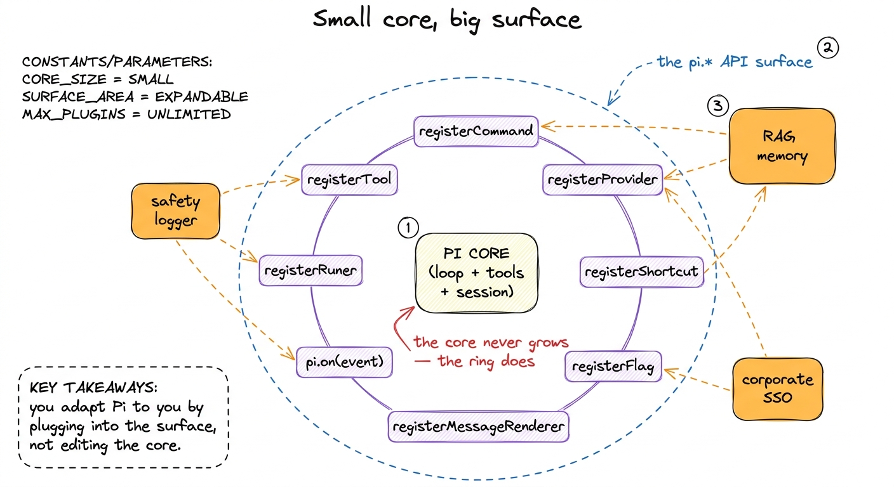
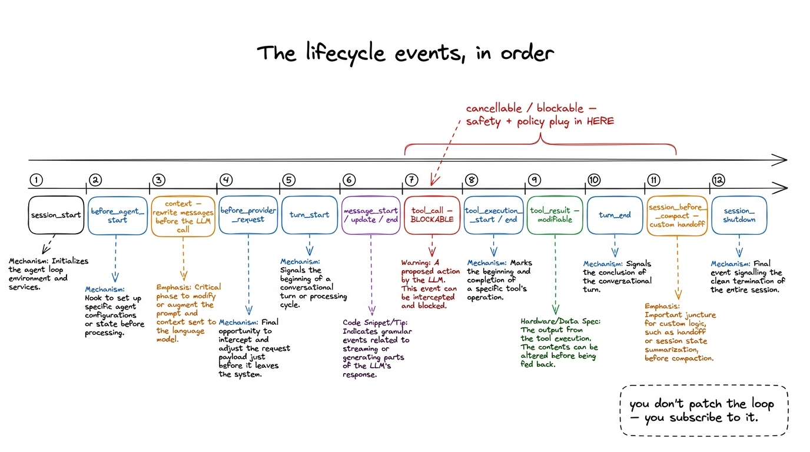
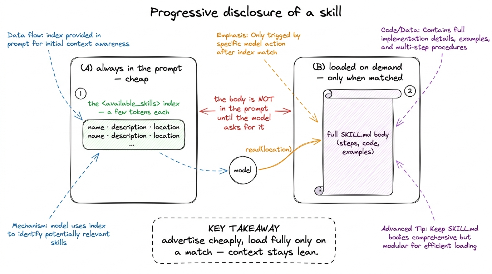
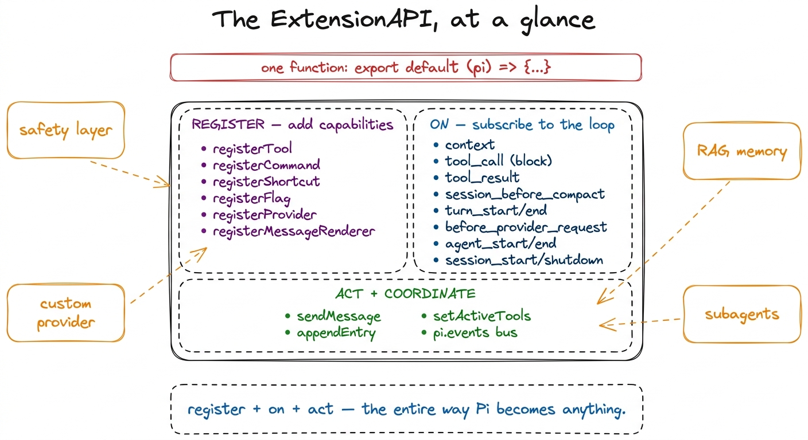

Extensibility: everything is an extension BUILD
Look back at everything Pi has done in these chapters. It ran an agent loop, gave the model a toolbox, guarded that toolbox with a safety gate, assembled a system prompt, managed context, compacted history, spun up subagents. Every one of those is a feature you might have expected the core to own — to hard-code, to bake in, to make un-removable. And here is the thing that makes Pi Pi: almost none of it is baked in. The safety gate is not a special case in the loop. The subagent dispatcher is not a privileged module. They are all the same shape — the shape you are about to build with. Pi's own README states the thesis in three words: everything is an extension.
This is the last layer, and it is the one that dissolves all the others. Once you see it, you stop asking "what can Pi do?" and start asking "what do I want it to do?" — because the answer is the same code path either way.
The missing piece: a small core can't be everything to everyone
Here is the tension the previous chapters left unresolved. A coding agent is used by a security team that needs every bash call logged; by a researcher who wants their vector store consulted before every model call; by a company whose LLM lives behind an SSO proxy; by someone who just wants a /standup slash command. No core can ship all of that. If the maintainers try, the core bloats into a swamp of half-relevant flags, and it still misses your specific need.
The only escape is to make the core small and give it a surface — a set of places where outside code can plug in and change behavior. Pi's answer is a single extension model, powerful enough that the maintainers build Pi's own features with it. If the framework can implement its safety layer as an extension, so can you.

figure rendering · Pi keeps a small core and exposes a wide plug-in surface. Extensions aWhat an extension actually is
Strip away the ceremony and a Pi extension is one function. You write a TypeScript module whose default export receives the API object, conventionally named pi:
import type { ExtensionAPI } from "@earendil-works/pi-coding-agent";
export default function (pi: ExtensionAPI) {
// register things, subscribe to events — that's it
}That is the entire contract, defined in packages/coding-agent/src/core/extensions/types.ts. The function may be sync or async. When it runs, it is handed pi, and it uses pi to do two kinds of thing: register new capabilities, and subscribe to events in the agent's life. Nothing more. The smallness is the point.
Pi finds your extension in one of four ways, all handled by packages/coding-agent/src/core/extensions/loader.ts. It scans ~/.pi/agent/extensions/*.ts for global extensions that apply everywhere. It scans .pi/extensions/*.ts for project-local ones — but only after the trust gate, because a project-local extension is arbitrary code from a repo you may have just cloned.1 The order matters and it is deliberate. Project extensions load behind the same project_trust gate discussed in the execution environment: an untrusted folder's .pi/extensions/ never runs until you say yes. A cloned repo cannot hijack your agent on first open. You can point at one directly with the -e <path> flag. And you can list them in settings.json under extensions or packages, where a package can be a local path, an npm: name, or a git: URL. Loading itself uses jiti, so a .ts extension runs with no build step — you drop in a file and it just works.
2 jiti is a just-in-time TypeScript loader. It means your extension needs no compilation, no tsc, no bundler — Pi imports the .ts file at runtime and calls its default export. The friction from "idea" to "running extension" is a single saved file.
The register* verbs: adding new capabilities
The first half of pi is a set of register* methods, each one adding a kind of capability the core knows how to host but doesn't ship on its own.
registerTool adds an LLM-callable tool — the same kind the model uses for reading and editing. You give it a name, a label, a description for the model, a TypeBox parameters schema, and an execute function.3 There is a lovely detail here: a custom tool can supply a promptSnippet and promptGuidelines. When present, Pi injects that one-liner into the "Available tools" section of the system prompt, so the model learns your tool exists the same way it learns about bash. Your tool becomes a first-class citizen, not a bolt-on. This is exactly how Pi's own file and shell tools are shaped, which is why a tool you write is indistinguishable to the model from one that ships in the box.
registerCommand adds a slash command — /deploy, /review, whatever you like — with argument completions. registerShortcut binds a KeyId to a handler. registerFlag adds a CLI flag you later read with pi.getFlag(name). registerMessageRenderer teaches the TUI how to draw a custom message type, so your extension can put rich output on screen.
And registerProvider — this is the big one — registers an entire LLM provider: base URL, API key, the list of models, even an OAuth login flow. The type doc in types.ts shows the shape directly:
pi.registerProvider("corporate-ai", {
baseUrl: "https://ai.corp.com",
api: "openai-responses",
models: [...],
oauth: {
name: "Corporate AI (SSO)",
async login(callbacks) { ... },
async refreshToken(credentials) { ... },
getApiKey(credentials) { return credentials.access; },
},
});Sit with that. A user can teach Pi to talk to a model it has never heard of — behind their company's single sign-on — in one file, with no change to Pi itself. The core never learns about "corporate-ai"; it just hosts whatever the surface hands it.
Alongside registration, pi exposes session actions — sendMessage, sendUserMessage, appendEntry, setSessionName — and tool management via getActiveTools / setActiveTools, so an extension can drive the conversation and reshape the live toolset, not just add to it.
The other half: pi.on, the ~31 lifecycle events
Registration adds new things. Events let you change existing things — and this is where the real power lives. As the agent runs, it fires a stream of lifecycle events, and pi.on(EVENT, handler) lets you listen. There are about thirty-one in types.ts, and the list reads like a map of the agent's inner life.

figure rendering · Pi's agent loop emits ~31 lifecycle events. Extensions subscribe withA handler receives the event object and a context, and for many events the value it returns changes what happens next. Four events carry most of the weight:
context fires right before the LLM call, and it hands you the full message array:
pi.on("context", (event) => {
// event.messages: AgentMessage[] — the exact turn about to be sent
return { messages: rewritten }; // return to replace them
});This one line is a whole category of feature. Want retrieval-augmented generation? Consult your vector store here and splice the results in. Want a memory system? Inject remembered facts before the model ever sees the turn. The model's entire perception of the conversation passes through this hook, and you may rewrite it.
tool_call fires before a tool runs, and its result type has a block field:
pi.on("tool_call", (event) => {
if (isDangerous(event.input)) {
return { block: true, reason: "blocked by policy" };
}
// to *modify* args instead: mutate event.input in place
});Stop and recognize this. The entire tool-safety chapter plugged in exactly here. The permission gate is not a hard-wired branch inside the loop — it is a tool_call handler that returns { block: true }. Which means your safety policy, your SIEM logger, your "never touch production" rule, attaches at the same seam, with equal standing.
session_before_compact lets you intercept compaction — supply your own summary, or implement a custom handoff to a fresh session instead of the default squeeze. tool_result lets you rewrite a tool's output before the model sees it (truncate, redact, annotate). And there are more for every phase: turn_start / turn_end, before_provider_request / after_provider_response, message_start / update / end, agent_start / agent_end, session_start, session_shutdown.
One more surface ties extensions to each other: pi.events, a shared EventBus with its own on / emit. Two extensions that know nothing of each other's code can still coordinate through it. The plug-in surface is not just Pi-to-extension; it is extension-to-extension.
Skills: extensibility for the model, not the code
Extensions extend the harness. But there is a second, quieter form aimed at the model — skills, in packages/coding-agent/src/core/skills.ts. A skill needs no code at all. It is a Markdown file: a SKILL.md at the root of a directory, or a standalone .md, carrying frontmatter with three fields — name, description (up to 1024 characters), and an optional disable-model-invocation flag. Skills live in ~/.pi/agent/skills/ and .pi/skills/, mirroring the extension paths.
The elegant part is how a skill reaches the model. Pi does not dump the skill's body into the prompt. It emits only a compact index — the formatSkillsForPrompt function builds an <available_skills> block with just each skill's name, description, and file location:
<available_skills>
<skill>
<name>pdf-forms</name>
<description>Fill and flatten PDF forms with pdftk...</description>
<location>/home/you/.pi/agent/skills/pdf-forms/SKILL.md</location>
</skill>
</available_skills>The block is preceded by one instruction: "Use the read tool to load a skill's file when the task matches its description." That is the whole mechanism. The model sees a menu of one-line descriptions; when a task actually matches, it uses the ordinary read tool to pull the full body on demand. This is progressive disclosure: pay a few tokens per skill to advertise it, pay the full cost only when it is used.

figure rendering · Skills use progressive disclosure: only name, description, and locatioNotice this reuses machinery you already have. The model loads a skill with the same read tool it uses for source files — no new primitive, no special skill-runner. A skill is just a document the model knows how to find and open when it is relevant.
The thesis, closed
Step back and look at the whole surface at once.

figure rendering · The ExtensionAPI in one view: register* verbs add capabilities, pi.onThat is the answer to the tension we opened with. The core stays small because it doesn't try to be everything; it exposes register* to add capabilities, pi.on to reshape the loop, and session actions to drive the conversation — and then Pi builds its own features out of that same surface. The safety gate is a tool_call handler. A memory system is a context handler. A corporate model is a registerProvider. A domain workflow is a skill the model reads on demand.
You do not fork Pi to make it yours. You write one function, drop one Markdown file, and the agent bends to your world. That is the whole thesis of the layer, and of the harness: you adapt Pi to you, not the other way around. The tour is complete — return to how it all fits to see the layers assembled, now that you know the seam every one of them was built on.